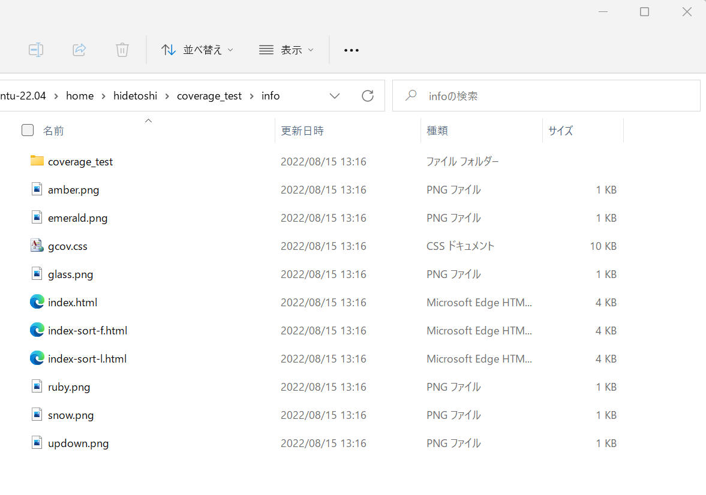

高品質なソフトウェア開発を行う、という観点で調べると必ず登場するのがソースコードカバレッジです。
ソースコード上のどの行が評価されて、どの行が未評価なのか、などを可視化することができます。
ここでは gcc/g++ 環境で使用可能な gcov と、その結果を html に変換して閲覧しやすくしてくれる lcov という超有名なツールについて記載します。
gcov の使用方法について記載します。
| コンパイラ : | gcc/g++, | 11.2.0 |
| ツール : | gcov, | 11.2.0 |
| OS: | Ubuntu | 22.04.1 (WSL) |
gcov のオプション一覧は以下の通りです。
$ gcov --help
Usage: gcov [OPTION...] SOURCE|OBJ...
Print code coverage information.
-a, --all-blocks Show information for every basic block
-b, --branch-probabilities Include branch probabilities in output
-c, --branch-counts Output counts of branches taken
rather than percentages
-d, --display-progress Display progress information
-D, --debug Display debugging dumps
-f, --function-summaries Output summaries for each function
-h, --help Print this help, then exit
-j, --json-format Output JSON intermediate format
into .gcov.json.gz file
-H, --human-readable Output human readable numbers
-k, --use-colors Emit colored output
-l, --long-file-names Use long output file names for included
source files
-m, --demangled-names Output demangled function names
-n, --no-output Do not create an output file
-o, --object-directory DIR|FILE Search for object files in DIR or called FILE
-p, --preserve-paths Preserve all pathname components
-q, --use-hotness-colors Emit perf-like colored output for hot lines
-r, --relative-only Only show data for relative sources
-s, --source-prefix DIR Source prefix to elide
-t, --stdout Output to stdout instead of a file
-u, --unconditional-branches Show unconditional branch counts too
-v, --version Print version number, then exit
-w, --verbose Print verbose informations
-x, --hash-filenames Hash long pathnames
Obsolete options:
-i, --json-format Replaced with -j, --json-format
-j, --human-readable Replaced with -H, --human-readable
For bug reporting instructions, please see:
<file:///usr/share/doc/gcc-11/README.Bugs>.
| オプション | 意味 |
|---|---|
| -a, --all-blocks |
基本ブロックごとに個別の実行カウントを書き込みます。 通常、gcovは行のメインブロックのみに実行カウントを出力します。このオプションを使用すると、単一行内のブロックが実行されていないかどうかを判断することができます。 |
| -b, --branch-probabilities |
分岐の頻度を出力ファイルに書き込み、分岐のサマリー情報を標準出力に書き込みます。 このオプションを使うと、プログラムの各ブランチがどのくらいの頻度で実行されたかを見ることができます。無条件分岐は-uオプションが与えられています。 |
| -c, --branch-counts | 枝の頻度は、取られた枝の割合ではなく、取られた枝の数として書きます。 |
テストプログラムを使って、実際に gcov を試してみます。
(1) テストプログラムを作成します。ここではこんな感じのテストプログラムを使ってみます。
[プログラムソース "coverage_test.c"]
#include <stdio.h>
#include <stdlib.h>
int main() {
int num = 1;
if ((num % 2) == 0) {
printf("%d is even.\n", num);
}
else {
printf("%d is odd.\n", num);
}
return EXIT_SUCCESS;
}
(2) プログラムを "-coverage" オプション付きでコンパイルします。
hidetoshi@Laptop4:~$ gcc -g -coverage coverage_test.c -o coverage_test
実行ファイル "coverage_test" と共に "coverage_test.gcno" というファイルが出力されます。
NOTE
コンパイルオプションとして「-coverage」ではなく「"-fprofile-arcs" フラグと "-ftest-coverage"
フラグを付けてコードをコンパイルします。」と説明されている記事も多数見かけます。
"-coverage" オプションは
"-fprofile-arcs -ftest-coverage -lgcov" と同義（シノムニ）とのことです。詳しくは下記 ULR 中の
"--coverage" 説明を参照。
Instrumentation Options (Using the GNU Compiler Collection (GCC))
(3) プログラムを実行します。
hidetoshi@Laptop4:~$ ./coverage_test 1 is odd.
"coverage_test.gcda" というファイルが出力されます。カバレッジ測定データを保存したバイナリデータのようです。
(4) gcov でカバレッジデータを読み込みます。
gcov の引数としてソースまたはオブジェクトとなっていますが、ここでは実行ファイルを指定します。
オプションとして "-bc"
を指定してみます。
hidetoshi@Laptop4:~$ gcov -bc coverage_test File 'coverage_test.c' Lines executed:83.33% of 6 Branches executed:100.00% of 2 Taken at least once:50.00% of 2 Calls executed:50.00% of 2 Creating 'coverage_test.c.gcov' Lines executed:83.33% of 6 hidetoshi@Laptop4:~$
(5) 出力されたファイル "coverage_test.c.gcov " をテキストエディターで開くと、下記のような結果を得ることができました。
"-bc" をオプション指定したことで、branch の出力も行われています。
-: 0:Source:coverage_test.c
-: 0:Graph:coverage_test.gcno
-: 0:Data:coverage_test.gcda
-: 0:Runs:1
-: 1:#include <stdio.h>
-: 2:#include <stdlib.h>
-: 3:
function main called 1 returned 100% blocks executed 80%
1: 4:int main() {
1: 5: int num = 1;
-: 6:
1: 7: if ((num % 2) == 0) {
branch 0 taken 0 (fallthrough)
branch 1 taken 1
#####: 8: printf("%d is even.\n", num);
call 0 never executed
-: 9: }
-: 10: else {
1: 11: printf("%d is odd.\n", num);
call 0 returned 1
-: 12: }
-: 13:
1: 14: return EXIT_SUCCESS;
-: 15:}
上記結果から、下記 8行目 の部分が1回も実行されていないことを読み取ることができます。
8: printf("%d is even.\n", num);
(6) プログラムを再実行すると、実行回数は先ほど計測済みの値へ追加されていきます。
入力値により分岐などある場合、入力条件を変えながらカバレッジ測定を行うことができます。
(7) カウンタを初期化して最初から実行したい場合は、ファイル "*.gcda" を全て削除します。
とりあえず gcov を以上のような感じで使えそうです。
lcovを使うと、カバレッジの計測結果を視覚的にわかりやすく表示（HTML形式）できます。
genhtml というツールとともに使用します。
lcov のオプション一覧は以下の通りです。
$ lcov --help
Usage: lcov [OPTIONS]
Use lcov to collect coverage data from either the currently running Linux
kernel or from a user space application. Specify the --directory option to
get coverage data for a user space program.
Misc:
-h, --help Print this help, then exit
-v, --version Print version number, then exit
-q, --quiet Do not print progress messages
Operation:
-z, --zerocounters Reset all execution counts to zero
-c, --capture Capture coverage data
-a, --add-tracefile FILE Add contents of tracefiles
-e, --extract FILE PATTERN Extract files matching PATTERN from FILE
-r, --remove FILE PATTERN Remove files matching PATTERN from FILE
-l, --list FILE List contents of tracefile FILE
--diff FILE DIFF Transform tracefile FILE according to DIFF
--summary FILE Show summary coverage data for tracefiles
Options:
-i, --initial Capture initial zero coverage data
-t, --test-name NAME Specify test name to be stored with data
-o, --output-file FILENAME Write data to FILENAME instead of stdout
-d, --directory DIR Use .da files in DIR instead of kernel
-f, --follow Follow links when searching .da files
-k, --kernel-directory KDIR Capture kernel coverage data only from KDIR
-b, --base-directory DIR Use DIR as base directory for relative paths
--convert-filenames Convert filenames when applying diff
--strip DEPTH Strip initial DEPTH directory levels in diff
--path PATH Strip PATH from tracefile when applying diff
--(no-)checksum Enable (disable) line checksumming
--(no-)compat-libtool Enable (disable) libtool compatibility mode
--gcov-tool TOOL Specify gcov tool location
--ignore-errors ERRORS Continue after ERRORS (gcov, source, graph)
--no-recursion Exclude subdirectories from processing
--to-package FILENAME Store unprocessed coverage data in FILENAME
--from-package FILENAME Capture from unprocessed data in FILENAME
--no-markers Ignore exclusion markers in source code
--derive-func-data Generate function data from line data
--list-full-path Print full path during a list operation
--(no-)external Include (ignore) data for external files
--config-file FILENAME Specify configuration file location
--rc SETTING=VALUE Override configuration file setting
--compat MODE=on|off|auto Set compat MODE (libtool, hammer, split_crc)
--include PATTERN Include files matching PATTERN
--exclude PATTERN Exclude files matching PATTERN
For more information see: http://ltp.sourceforge.net/coverage/lcov.php
テストプログラムを使って、実際に lcov を試してみます。
| コンパイラ : | gcc/g++, | 11.2.0 |
| ツール : | lcov, | 1.14 |
| genhtml, | 1.14 | |
| OS: | Ubuntu | 22.04.1 (WSL) |
(1) テストプログラムを作成します。ここではこんな感じのテストプログラムを使ってみます。
[プログラムソース "coverage_test.c"]
#include <stdio.h>
#include <stdlib.h>
int main() {
int num = 1;
if ((num % 2) == 0) {
printf("%d is even.\n", num);
}
else {
printf("%d is odd.\n", num);
}
return EXIT_SUCCESS;
}
(2) プログラムを "-coverage" オプション付きでコンパイルします。
hidetoshi@Laptop4:~$ gcc -g -coverage coverage_test.c -o coverage_test
実行ファイル "coverage_test" と共に "coverage_test.gcno" というファイルが出力されます。
NOTE
コンパイルオプションとして「-coverage」ではなく「"-fprofile-arcs" フラグと "-ftest-coverage"
フラグを付けてコードをコンパイルします。」と説明されている記事も多数見かけます。
"-coverage" オプションは
"-fprofile-arcs -ftest-coverage -lgcov" と同義（シノムニ）とのことです。詳しくは下記 ULR 中の
"--coverage" 説明を参照。
Instrumentation Options (Using the GNU Compiler Collection (GCC))
(3) プログラムを実行します。
hidetoshi@Laptop4:~$ ./coverage_test 1 is odd.
"coverage_test.gcda" というファイルが出力されます。カバレッジ測定データを保存したバイナリデータのようです。
(4) "coverage_test.gcda" と同じ場所で lcov を実行します。
$ lcov -d . -c -o coverage_test.info Capturing coverage data from . Subroutine read_intermediate_text redefined at /usr/bin/geninfo line 2623. Subroutine read_intermediate_json redefined at /usr/bin/geninfo line 2655. Subroutine intermediate_text_to_info redefined at /usr/bin/geninfo line 2703. Subroutine intermediate_json_to_info redefined at /usr/bin/geninfo line 2792. Subroutine get_output_fd redefined at /usr/bin/geninfo line 2872. Subroutine print_gcov_warnings redefined at /usr/bin/geninfo line 2900. Subroutine process_intermediate redefined at /usr/bin/geninfo line 2930. Found gcov version: 11.2.0 Using intermediate gcov format Scanning . for .gcda files ... Found 1 data files in . Processing coverage_test.gcda Finished .info-file creation
(6) genhtml を実行します。
$ genhtml coverage_test.info -o ./info Reading data file coverage_test.info Found 1 entries. Found common filename prefix "/home/hidetoshi" Writing .css and .png files. Generating output. Processing file coverage_test/coverage_test.c Writing directory view page. Overall coverage rate: lines......: 83.3% (5 of 6 lines) functions..: 100.0% (1 of 1 function)
./info フォルダ中に下図のような多数のファイルを生成してくれます。

(7) ./info ディレクトリ中の index.html をブラウザで開きます。
下図のような画面を表示するので、「coverage_test」の部分をクリックします。
「coverage_test.c」の部分をクリックします。
期待するソースコードカバレッジを表示してくれました。
とりあえず lcov を以上のような感じで使えそうです。
lcovを使うと、カバレッジの計測結果を視覚的にわかりやすく表示（HTML形式）できます。
とても便利なツールですが、デフォルトでは
C0(命令網羅) のカバレッジデータしか表示してくれません。
gcov はC0,C1両方のカバレッジデータを出力しています。
| コンパイラ : | gcc/g++, | 11.2.0 |
| ツール : | lcov, | 1.14 |
| genhtml, | 1.14 | |
| OS: | Ubuntu | 22.04.1 (WSL) |
C1(分岐網羅)のカバレッジを表示するには ~/.lcovrc を以下のように設定して C1 を有効化する必要があります。
[~/.lcovrc]
# Include branch coverage data display (can be disabled by the # --no-branch-coverage option of genhtml) genhtml_branch_coverage = 1 # Specify if branch coverage data should be collected and processed. lcov_branch_coverage = 1
--rc lcov_branch_coverage=1genhtml
--branch-coverage
後者の例を実際に実行してみます。
(1) テストプログラムを作成します。
[プログラムソース "coverage_test.c"]
#include <stdio.h>
#include <stdlib.h>
int main() {
int num = 1;
if ((num % 2) == 0) {
printf("%d is even.\n", num);
}
else {
printf("%d is odd.\n", num);
}
return EXIT_SUCCESS;
}
(2) プログラムを "-coverage" オプション付きでコンパイルします。
hidetoshi@Laptop4:~$ gcc -g -coverage coverage_test.c -o coverage_test
実行ファイル "coverage_test" と共に "coverage_test.gcno" というファイルが出力されます。
NOTE
コンパイルオプションとして「-coverage」ではなく「"-fprofile-arcs" フラグと "-ftest-coverage"
フラグを付けてコードをコンパイルします。」と説明されている記事も多数見かけます。
"-coverage" オプションは
"-fprofile-arcs -ftest-coverage -lgcov" と同義（シノムニ）とのことです。詳しくは下記 ULR 中の
"--coverage" 説明を参照。
Instrumentation Options (Using the GNU Compiler Collection (GCC))
(3) プログラムを実行します。
hidetoshi@Laptop4:~$ ./coverage_test 1 is odd.
"coverage_test.gcda" というファイルが出力されます。
(4) "coverage_test.gcda" と同じ場所で lcov を実行します。
オプションとして "--rc lcov_branch_coverage=1" を付けて実行します。
$ lcov -d . -c --rc lcov_branch_coverage=1 -o coverage_test.info
Capturing coverage data from .
Subroutine read_intermediate_text redefined at /usr/bin/geninfo line 2623.
Subroutine read_intermediate_json redefined at /usr/bin/geninfo line 2655.
Subroutine intermediate_text_to_info redefined at /usr/bin/geninfo line 2703.
Subroutine intermediate_json_to_info redefined at /usr/bin/geninfo line 2792.
Subroutine get_output_fd redefined at /usr/bin/geninfo line 2872.
Subroutine print_gcov_warnings redefined at /usr/bin/geninfo line 2900.
Subroutine process_intermediate redefined at /usr/bin/geninfo line 2930.
Found gcov version: 11.2.0
Using intermediate gcov format
Scanning . for .gcda files ...
Found 1 data files in .
Processing coverage_test.gcda
Finished .info-file creation
(6) genhtml を実行します。
オプションとして "--branch-coverage" を付けて実行します。
$ genhtml coverage_test.info --branch-coverage -o ./info
Reading data file coverage_test.info
Found 1 entries.
Found common filename prefix "/home/hidetoshi"
Writing .css and .png files.
Generating output.
Processing file coverage_test/coverage_test.c
Writing directory view page.
Overall coverage rate:
lines......: 83.3% (5 of 6 lines)
functions..: 100.0% (1 of 1 function)
branches...: 50.0% (1 of 2 branches)
(7) ./info ディレクトリ中の index.html をブラウザで開きます。
以上の手順で lcov の表示に Branches(c1) を追加できることを確認できました。
本ページの情報は、特記無い限り下記 MIT ライセンスで提供されます。
| 2022-08-15 | - | 全面更新 |
| 2021-03-20 | - | 新規作成 |